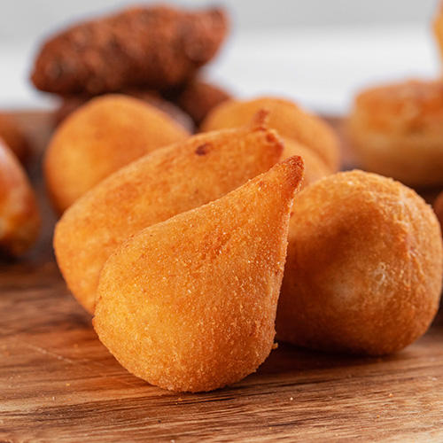

Coxinha frita

Coxinha is a famous snack in brazil and is commonly seen in street
stalls, bars, bakeries and parties.
Although the most common flavor of coxinha being chicken, the dough go
pretty well with several diferrent ingredients, so experimentation is
welcome with this recipe.